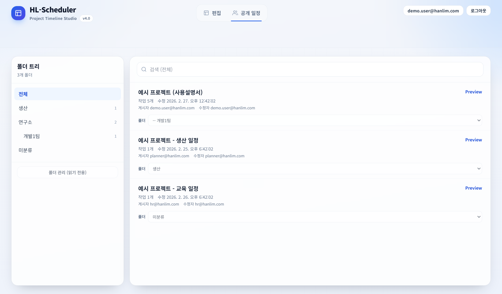
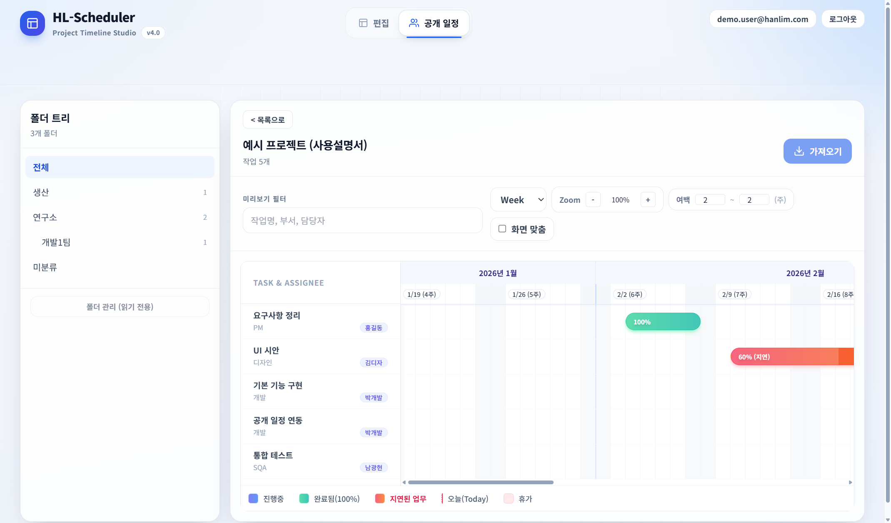
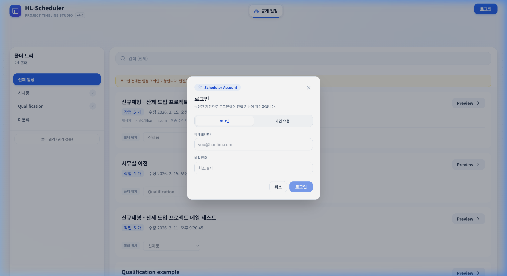
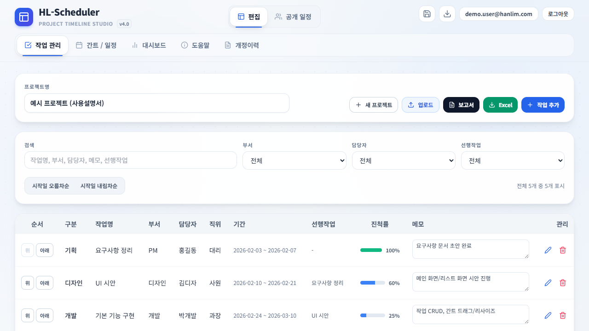
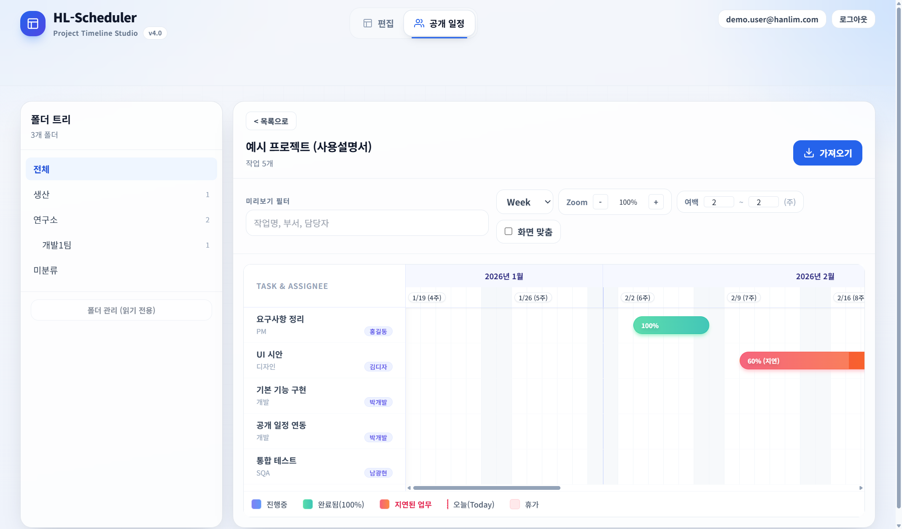
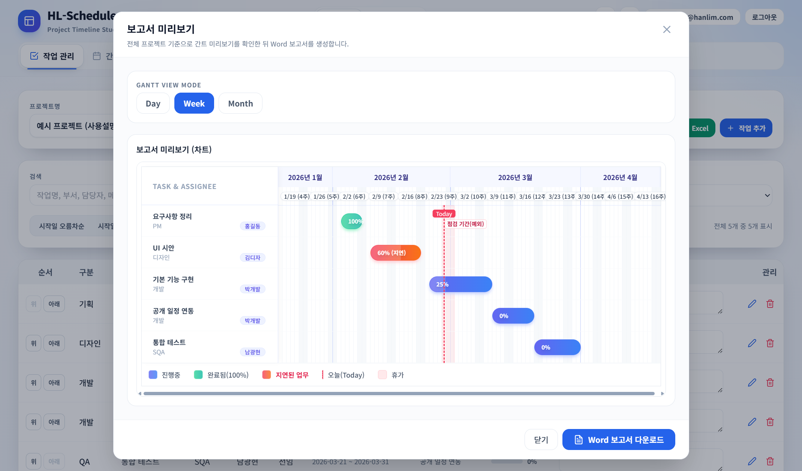

HL-Scheduler User Manual
업무 일정을 만들고
실시간으로 공유하는 표준 화면 안내서
HL-Scheduler는 프로젝트 일정과 작업(Task)을 만들고, 간트 차트로 시각화하고, 공개 일정 서버에 업로드해 다른 사람들이 같은 화면으로 바로 확인할 수 있게 만든 일정 공유 프로그램입니다.
조회 화면과 편집 화면이 분리되어 있습니다. 조회자는 공개 일정에서 보고, 작성자는 편집 탭에서 일정을 다듬습니다.
작업 중 데이터는 현재 PC의 브라우저 저장소에 자동 저장됩니다. 다른 PC로 옮기거나 안전하게 보관하려면 JSON 백업이 필요합니다.
Step 1
공개 일정에서 프로젝트를 찾고 Preview로 확인하기

왼쪽은 폴더 트리, 오른쪽은 일정 카드 목록입니다. 검색창과 Preview 버튼으로 원하는 일정을 빠르게 찾을 수 있습니다.
사용 순서
- 1왼쪽 폴더 트리에서 부서나 카테고리를 선택합니다.
- 2상단 검색으로 프로젝트명을 입력해 목록을 좁힙니다.
- 3각 카드의 Preview를 눌러 간트 차트 형태로 미리 봅니다.
로그인하지 않아도 공개 일정 검색과 Preview는 가능합니다. 다만 가져오기와 편집, 업로드는 승인된 계정에서만 열립니다.
| 영역 | 역할 |
|---|---|
| 폴더 트리 | 부서별, 팀별 일정 분류 확인 |
| 검색창 | 프로젝트명 기준 빠른 검색 |
| 일정 카드 | 작업 수, 수정일, 게시자, 폴더 위치 확인 |
| Preview | 세부 일정 화면으로 진입 |
Step 2
Preview와 로그인, 권한 구조 이해하기

Preview에서는 간트 차트와 확대/축소, 보기 단위, 검색 필터를 바로 확인할 수 있습니다. 승인된 계정은 여기서 가져오기를 실행합니다.
공개 일정 가져오기와 JSON 불러오기는 현재 편집 중인 프로젝트를 새 데이터로 교체합니다. 중요한 편집본은 먼저 JSON 백업을 저장하십시오.

이메일과 비밀번호로 로그인합니다. 비밀번호는 최소 8자이며, 신규 사용자는 가입 요청 후 관리자 승인 과정을 거칩니다.
| 상태 | 가능한 작업 |
|---|---|
| 비로그인 | 공개 일정 조회와 Preview |
| 가입 요청 | 승인 대기, 실제 편집 불가 |
| 승인 완료 | 편집, 가져오기, 업로드, 결과물 저장 |
| 관리자 | 사용자 승인, 폴더 관리 추가 가능 |
Step 3
작업 관리 탭에서 프로젝트 구조 만들기
기본 입력 흐름
- 1프로젝트명을 입력하고 필요하면 새 프로젝트로 초기화합니다.
- 2작업 추가를 눌러 구분과 작업명을 먼저 등록합니다.
- 3부서, 담당자, 직위, 이메일, 시작일, 종료일, 진척률, 메모를 채웁니다.
- 4선행작업을 지정해 후속 일정이 자동으로 밀릴 수 있게 연결합니다.
- 5검색, 시작일 정렬, 순서 이동, 메모 수정으로 표를 정리합니다.
입력과 정리는 여기서 하고, 실제 일정 막대 조정은 간트 / 일정 탭에서 하는 흐름이 가장 빠릅니다.

Step 3용으로 다시 촬영한 일반 작업 관리 화면입니다. 프로젝트명, 검색/필터, 선행작업, 진척률, 메모, 관리 버튼을 한 화면에서 확인할 수 있습니다.
Step 4
간트 / 일정 탭에서 날짜와 예외 일정을 조정하기

왼쪽은 작업과 담당자, 오른쪽은 일정 막대입니다. 진행 중, 완료, 지연된 업무, Today, 휴가 영역이 색상으로 표시됩니다.
자주 쓰는 조작
- ✓Day / Week / Month 보기로 시점을 바꿉니다.
- ✓Zoom과 여백 값으로 표시 범위를 조절합니다.
- ✓화면 맞춤으로 전체 범위를 한 화면에 맞출 수 있습니다.
- ✓작업 막대를 드래그하면 시작일과 종료일이 이동하거나 늘어납니다.
- ✓휴가/예외 일정에 점검 기간과 휴가를 넣으면 차트에 함께 표시됩니다.
Day 보기 범위가 매우 길면 성능과 가독성 때문에 화면 맞춤이 자동 비활성화됩니다. 이때는 Week 또는 Month 보기로 전환하는 것이 좋습니다.
Step 5
공유, 백업, Excel, Word, 이미지로 마무리하기
| 기능 | 언제 쓰면 좋은가 |
|---|---|
| 공개 업로드 | 팀원들이 웹에서 같은 일정을 실시간 조회해야 할 때 |
| JSON 백업 | PC 이동, 버전 보관, 가져오기 전 안전 저장 |
| Excel | 작업 목록을 표 형태로 정리해 전달할 때 |
| Word 보고서 | 회의용 보고서나 결재용 문서가 필요할 때 |
| PNG / JPG | PPT, 메신저, 메일 본문에 간트 화면을 넣을 때 |
중요 편집본은 먼저 JSON으로 백업하고, 그 다음 공개 업로드를 하십시오. 회의 자료가 필요하면 Word 또는 이미지 파일을 추가 저장하면 됩니다.
Excel은 현재 필터로 보이는 작업 기준이며, Word 보고서는 전체 프로젝트 기준입니다. 이미지 저장은 현재 간트 화면 기준입니다.

보고서 미리보기에서 간트 차트를 확인한 뒤 Word 보고서를 바로 다운로드할 수 있습니다.
자주 묻는 질문
- Q. 다른 PC에서 이어서 작업하려면? A. JSON 백업 후 새 PC에서 불러오십시오.
- Q. 편집 탭이 보이지 않으면? A. 로그인 여부와 승인 상태를 확인하십시오.
- Q. 가져오기 후 기존 일정이 사라졌다면? A. 해당 기능은 덮어쓰기입니다.
- Q. 업로드가 실패하면? A. 서버 설정, 권한, 또는 다른 사용자의 선행 업데이트 여부를 확인하십시오.
문의처
사용 승인, 운영 문의, 공개 일정 서버 관련 문의: SQA팀 남광현 / nkh92@hanlim.com